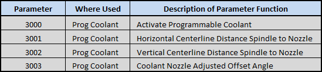

Probe Basic Parameters
Probe basic requires the following parameters be created in the var file
Probe Basic’s devlop version is now using the var file in the configs folder for storing parameters used in subroutines and other functions throughout linuxcnc. These are callable the same as all other parameters which allows them to be used in remap subroutines. This will allow users a greater degree of flexibility in modifying and using features such as tool touch off during tool changes, programmable coolant, probing etc all while being able to make changes from the from within the probe basic user interfaces entry boxes. Once changes to the entries are made they are recorded to the var file and are available immediately after the changes are made. This allows users the ability to change vital settings to ensure their machines run optimally and reliably without major config modifications.
The Probe Basic Sim Config Folder contains the sim.var file which has been updated with these now required parameters. please be sure to add them to your machine connfiguration for proper functionality.
{kind=link}
{kind=link}
{kind=link}
{kind=link}